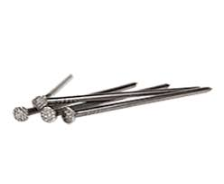
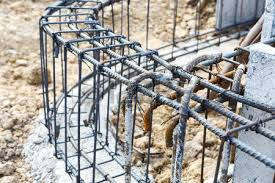

Blog
-

Misumari
Ngosha timber suppierKuna aina mbili za misumari ambayo inapatikana dukani kwetu (china na tanzania), watu hupendelea kutumia aina tofautitofauti kulingana na kazi anayoifanya.
BIDHAA
Ila kwa ushauri tanzania ni imara na inashika vizuri kwenye mbao , tena inategemea na kazi unayoifanya.
Ila nivizuri ukamuuliza fundi . -

NONDO , LINGI NA BINDINGWIRE
Ngosha timber suppierPia tunazo nondo (mil 12 , 6) bindingwire na ringi (mil 6 , kweny inc tofautitofauti kulingana na matumizi yako) , ivi yote vinahitajika kwenye msuko wa nondo aina yoyoteile , vinapatikana bei ya kuridhisha.
BIDHAA
Wasiisna nasi au tutembelee kujua mengi zaidi .
MBAO SAIZI TOFAUTI ZIPO

TUTEMBELEE
Ngosha timber suppierPale utakapo fanya maamuzi ya kuwasiliana a sisi , au kututembelea dukani kwetu , tunakuahidi hutaondoka kama ulivyokuja , kamasio kununua bidhaa basi kukupa ushauri utakao kupa manufaa unapoanza ujenzi.
BIDHAA